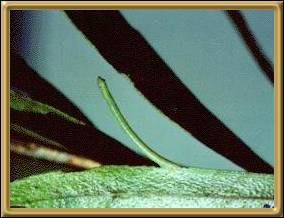
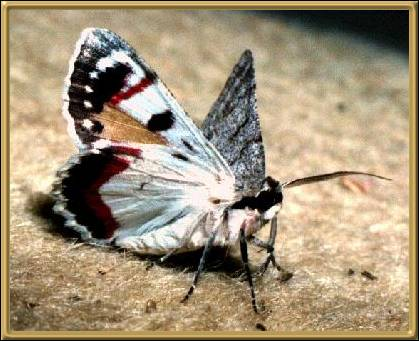

Photographs courtesy of: Lepidoptera Larvae of Australia
There are a great many different loopers and the caterpillars are often referred to
as Alpha Omega's because of the shape they take as they're moving. They are my son's
favourite caterpillar and they're found all over Australia.